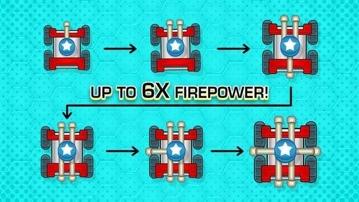
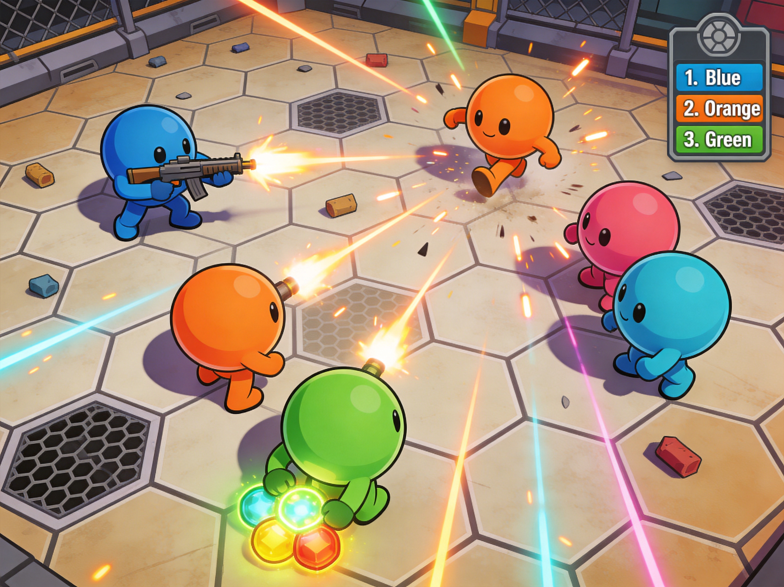

Introduction
Battles.io is a fast-paced, browser-based multiplayer strategy game where quick thinking meets fierce competition. Unlike traditional shooters, it drops you into dynamic arenas where you command troops and manage resources in real-time. What makes Battles.io truly unique is its seamless blend of micro-level combat and macro-level strategy. You are not just controlling a single character; you are leading a squad, making split-second decisions to outmaneuver rivals from around the globe. Players love it for its intuitive controls, high-stakes arena battles, and the sheer satisfaction of seizing strategic points to dominate the battlefield. Whether you are flanking enemies or executing game-changing special abilities, every second counts in this thrilling test of strategic prowess.
Getting Started

Starting your journey in Battles.io is straightforward but requires immediate tactical awareness. Upon entering the arena, you will control your forces using intuitive mouse commands. Use the left mouse button to direct standard attacks against enemy units, and the right mouse button to activate game-changing special abilities. Your primary objective is to master resource management while securing strategic points scattered across the map. In your first few matches, focus on understanding the spawn mechanics and the layout of the arena. Do not rush into the center immediately; instead, gather initial resources to build up your squad's strength. Pay close attention to the minimap to track enemy movements and identify isolated targets. As you eliminate opponents and capture zones, your resource pool will grow, allowing you to unlock stronger units and more devastating special moves. Mastering these basic mechanics is crucial for surviving the early game and establishing a solid foothold before the mid-game chaos erupts.
Basic Tips
To survive your initial battles in Battles.io, keep these essential tips in mind. First, prioritize resource generation over early aggression. Capture the outer strategic points first to build a steady income before engaging in the dangerous central zones. Second, always monitor your special ability cooldowns. A well-timed right-click can turn a losing skirmish into a decisive victory, so never waste it on a single weak enemy. Third, use the arena's terrain to your advantage. Funnel enemies into chokepoints where your squad's combined left-click attacks can overwhelm them efficiently. Fourth, never leave your units idle. Constant micro-management of your forces ensures maximum damage output and minimizes unnecessary casualties. Finally, observe your opponents' movement patterns. If an enemy is aggressively pushing a specific point, flank them from the side rather than engaging in a direct, resource-draining frontal assault. Adapting to these fundamentals will quickly elevate your gameplay.
Advanced Strategies

Once you have mastered the basics, implement these advanced strategies to dominate experienced players. First, employ the bait and switch tactic. Feign a retreat from a strategic point to draw overconfident enemies out of position, then abruptly turn and unleash your right-click special abilities to catch them off guard. Second, practice resource starvation. Instead of just defending points, actively harass the enemy's resource gatherers. By denying them the currency needed to upgrade their squad, you cripple their late-game potential. Third, coordinate area denial. Use your special abilities not just for direct damage, but to block chokepoints and control the flow of the battlefield, forcing opponents into unfavorable engagements. Fourth, master the art of the counter-engage. When an enemy team commits all their special abilities to an aggressive push, immediately disengage, wait for their cooldowns to expire, and then strike back with overwhelming force while they are completely vulnerable.
Pro Tips

To separate yourself from good players and become truly great, adopt these expert-level habits. First, utilize animation canceling. By rapidly alternating between left-click attacks and movement commands, you can significantly increase your squad's overall damage output and reposition faster than your opponents expect. Second, track enemy resource pools mentally. If you know an opponent just spent their accumulated resources on a massive upgrade, you have a narrow window to aggressively push and punish their temporary lack of reserves. Third, manipulate the spawn timers. By timing your deaths or retreats perfectly, you can force enemy respawns at suboptimal locations, giving your team a massive positional advantage for the next wave of combat.
Conclusion
Battles.io offers a thrilling blend of rapid reflexes and deep strategic planning that keeps every match feeling fresh and exciting. By mastering the intuitive mouse controls, managing your resources wisely, and executing well-timed special abilities, you can easily conquer the arena and outsmart players worldwide. Jump into the dynamic battlefield, refine your tactical approach, and prove your strategic prowess today!